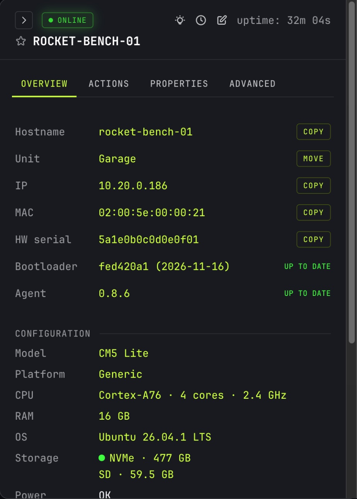
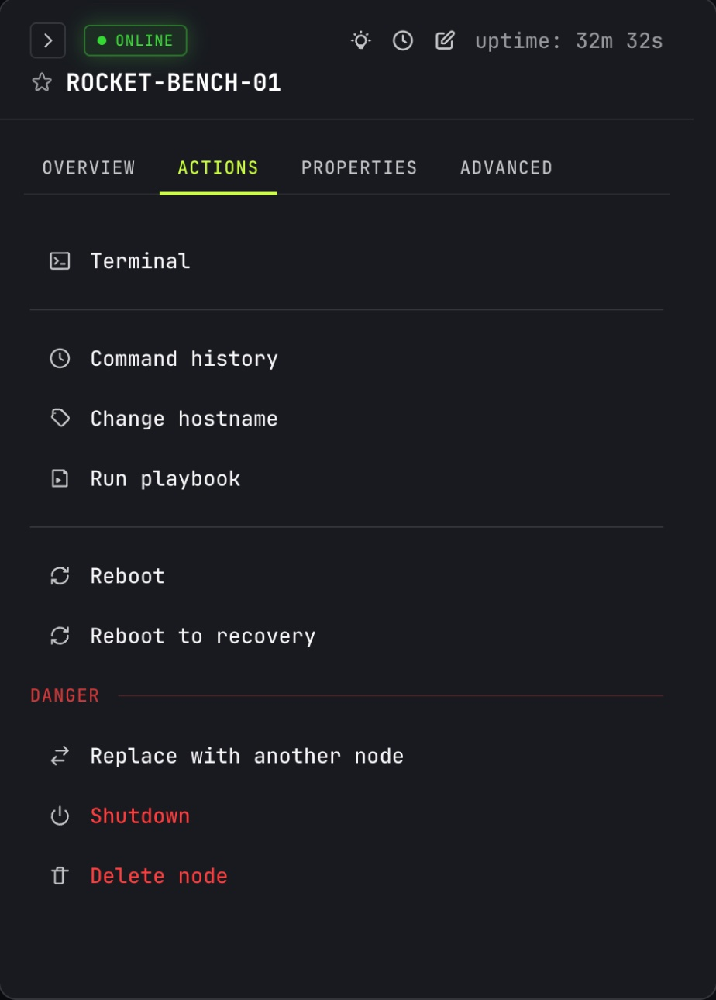

Working with a node
See what a node is, run commands on it, open a terminal, track its files and remove it.
Click a node on Nodes to open its panel. Everything you do to one device starts here.
See what a node is

Overview shows the node's state, addresses, versions and hardware. When a newer agent exists, Update appears next to Agent.
Properties holds the node's name and its settings, each with its own page: boot behavior, credentials, secrets and attributes, utilities and hardware.
Run something on it

On Actions, Reboot to recovery network-boots the recovery system once, and Shutdown keeps the device off until someone powers it on. A new hostname applies without a reboot. Click Refresh DHCP lease to make DNS pick it up now.
A manager may reboot, identify, rename and run playbooks. Shutting down, deleting, the terminal, file edits and agent updates need an admin.
Identify blinks the board's activity LED for 5 minutes, or for the time set on the Account page. Click ID in the node list to stop it early.
There is no script box. A script runs as a step of a playbook:
- Click Run playbook.
- Pick an active playbook that covers this node.
- Click Run playbook.
Each step's output is in the run's details under Operations. See Playbooks.
What a command's status means
Command history shows the last 20 commands.
| Status | Meaning |
|---|---|
| registered | Accepted, waiting for delivery. |
| sent / in_progress | Delivered / running on the device. |
| success / failed | Finished. A failure adds What the node reported. |
| superseded | A newer command of the same kind replaced it before delivery. |
| expired | Waited 24 hours for an offline node and was dropped. |
| skipped | Not applied on purpose, for example because the agent is too old. |
Reboot, shutdown, scripts, file reads and installs fail at once on an offline node. Settings and agent updates wait for it to reconnect, and most also wait until it boots its installed OS.
Open a terminal
Click Terminal for a root shell. It runs over the agent's connection, so the device needs no open SSH port, and it works in the recovery system too. Type exit or click ← Back to close it.
The row appears only if the install sets TERMINAL_ENABLED. It is off by default and on in the community compose file (CONFIGURATION.md). Admins and Super Admins can use it, and a Super Admin can grant it to other roles under Role permissions (Team and security). If the account requires two-factor authentication, yours must be enrolled.
The server closes the shell within a minute if you lose access. The audit trail records opening and closing, but not keystrokes.
Track and edit a file
- Open Advanced → Files and click Add file.
- Enter the file's absolute path. The platform reads it and stores version 1.
- Click the file, change Content and click Save version.
- Click Apply to device.

Refresh from device stores a new version when the file changed on the device.
The password-hash files, the adoption file and files ending in .pem, .key, .p12 or .pfx are refused, so don't track any other file that holds a secret. A version holds at most 512 KiB, and anyone who can manage the node's files can read it.
/boot/firmware/config.txt is tracked on every node as MANAGED. You can edit it but not untrack it. To stop tracking another file, click Untrack (keep the file on the device). Delete on device removes the file and keeps a backup beside it.
Remove a node
Actions → Delete node deletes the node's command history, tracked files and secret attachments. A connected device erases its adoption file and keeps its users, keys, data and agent. To remove the agent too, run the uninstall script from INSTALL.md. An offline device is not told and keeps trying to connect with an identity the platform refuses.
To swap hardware instead, Replace with another node moves the attributes, hostname and unit onto a spare node.

Set the status filter on Nodes to Deleted to find deleted nodes. Restore gives the identity back, so the device is accepted again. History and files do not return. If the board has since joined as another node in your account, Restore is disabled and the panel names that node. Delete it first to take the old one back. Forget removes the record for good.